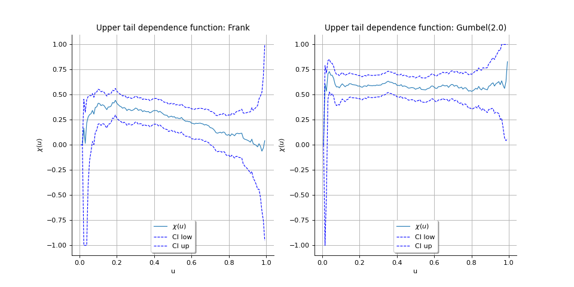
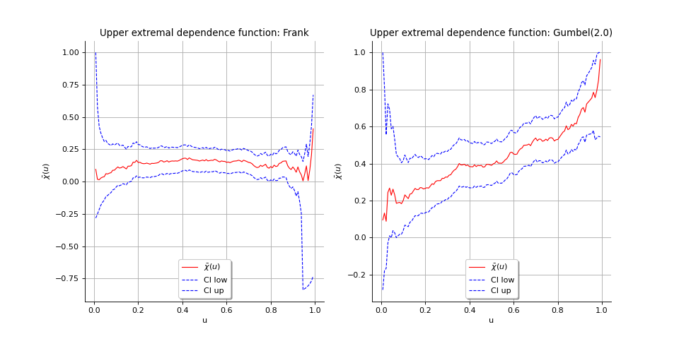
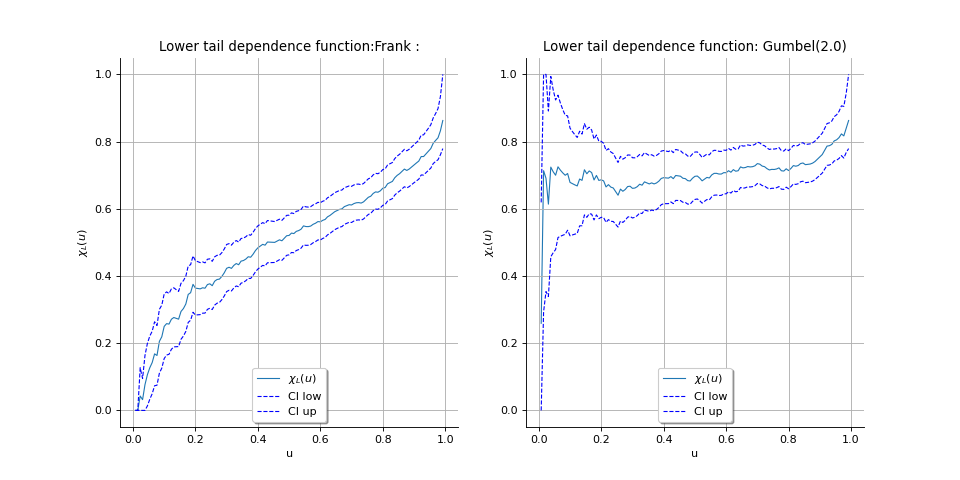
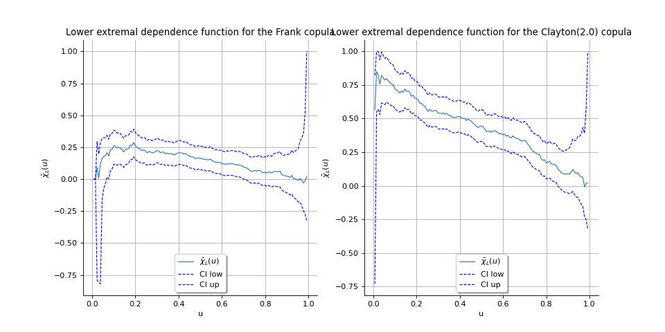

Tail dependence coefficients¶
The tail dependence coefficients helps to assess the asymptotic dependency of a bivariate random variables. We detail here the following ones:
the upper tail dependence coefficient denoted by
 (which is the notation of the probability
community) as well as
(which is the notation of the probability
community) as well as  (which is the notation of the extreme value community),
(which is the notation of the extreme value community),the upper extremal dependence coefficient denoted by
 ,
,the lower tail dependence coefficient denoted by
 ,
,the upper extremal dependence coefficient denoted by
 .
.
Readers should refer to [beirlant2004] to get more details.
Let  be a bivariate random vector with marginal distribution functions
be a bivariate random vector with marginal distribution functions
 and
and  , and copula
, and copula  .
.
Upper tail dependence coefficient
We denote by or the upper tail dependence coefficient:
![\lambda_U = \chi = \lim_{u \to 1} \Pset[F_2(X_2) > u | F_1(X_1) > u]]()
provided that the limit exists.
The coefficient can be interpreted as the tendency for one variable to take extreme high values
given that the other variable is extremely high.
The variables  are said to be:
are said to be:
asymptotically independent if and only if
 ,
,asymptotically dependent if and only if
 .
.
Now, we define the function  defined by:
defined by:
![\chi(u) = 2 - \frac{\log C(u,u)}{\log u}, \forall u \in [0,1]]()
We can see the tail dependence coefficient as the limit of the function when  tends
to
tends
to  . As a matter of fact, when is close to , we have:
. As a matter of fact, when is close to , we have:
![\chi(u) = 2 - \frac{1-C(u,u)}{1-u} + o(1) = \Pset[F_2(X_2) > u | F1(X_1) > u] + o(1)]()
which proves that:

Next to providing the limit , the function also provides some insight in the
dependence structure of the variables at lower quantile levels: the larger  the more
correlated are the variables.
the more
correlated are the variables.
The function is estimated on data for several which must not be too high because
of a problem of lack of data greater than . Condifence intervals can be estimated on each
. If the confidence interval contains the zero value when tends to , then we can assume that .
Within the class of asymptotically dependent variables, the value of increases with increasing degree of dependence at extreme levels.
We illustrate two cases where the variables are:
asymptotically independent: we generated a sample of size
 from a Frank copula which has a
zero upper tail coefficient whatever the parameter,
from a Frank copula which has a
zero upper tail coefficient whatever the parameter,asymptotically dependent: we generated a sample of size
from a Gumbel copula parametrized
by  which has a positive upper tail coefficient.
which has a positive upper tail coefficient.
(Source code, png)
{kind=link}

Upper extremal dependence coefficient
Within the class of asymptotically independent variables, the degrees of relative strength of dependence is
given by the function defined by:
![\bar{\chi}(u) = \frac{\log (\Pset [F_1(X_1) > u] \Pset [F_2(X_2) > u])}{\log [F_1(X_1) > u, F_2(X_2) > u]}, \forall u \in [0,1]]()
We show that:
![\bar{\chi}(u) = \frac{2 \log 1-u}{\log \bar{C}(u,u)} - 1, \forall u \in [0,1]]()
where  is the copula survivor function defined by:
is the copula survivor function defined by:
![\bar{C}(u_1, u_2) = \Pset [U_1 > u_1, U_2 > u_2] = 1-u_1-u_2+C(u_1, u_2), \forall u \in [0,1]]()
And we can define the upper extremal dependence coefficient by:

We show that  and that if the variables are asymptotically dependent, then
and that if the variables are asymptotically dependent, then  :
:
![\chi > 0 \Rightarrow \lim_{u \to 1} \bar{\chi}(u) = 1]()
We illustrate the function  for both previous cases.
for both previous cases.
(Source code, png)
{kind=link}

As a result, the pair  can be used as a summary of extremal dependence of
as follows:
can be used as a summary of extremal dependence of
as follows:
if
(and then ), then  and
and  are
asymptotically dependent in extreme high values and is a measure for strength of dependence,
are
asymptotically dependent in extreme high values and is a measure for strength of dependence,if
and  , then and are asymptotically
independent in extreme high values and is a measure for strength of dependence. If
, then and are asymptotically
independent in extreme high values and is a measure for strength of dependence. If
 , there is a positive association: simultanueous extreme high values occur more frequently
than under exact independence. If
, there is a positive association: simultanueous extreme high values occur more frequently
than under exact independence. If  , there is a negative association: simultanueous
extreme high values occur less frequently than under exact independence.
, there is a negative association: simultanueous
extreme high values occur less frequently than under exact independence.
Lower tail dependence coefficient
We denote by the lower tail dependence coefficient:
![\lambda_L = \lim_{u \to 0} [F_2(X_2) < u| F_1(X_1) < u]]()
provided that the limit exists.
The coefficient can be interpreted as the tendency for one variable to take extreme low values
given that the other variable is extremely low.
The variables are said to be:
asymptotically independent if and only if
 ,
,asymptotically dependent if and only if
 .
.
Similarly to what is proposed for the upper tail coefficient, we can define the function  by:
by:
![\chi_L(u) = \frac{\log (1 - C(u,u))}{\log (1-u)}, \forall u \in [0,1]]()
We can see the tail dependence coefficient as the limit of the function when tends
to  . As a matter of fact, when is close to , we have:
. As a matter of fact, when is close to , we have:
![\chi_L(u) = \frac{C(u,u)}{u} + o(1) = \Pset[F_2(X_2) < u | F_1(X_1) < u] + o(1)]()
which proves that:

We show that  .
.
Next to providing the limit , the function also provides some insight in
the dependence structure of the variables at upper quantile levels: The larger  the more
correlated are the variables.
the more
correlated are the variables.
The function is estimated on data for several which must not be too low because
of a problem of lack of data lesser than . Condifence intervals can be estimated on each
. If the confidence interval contains the zero value when tends to , then
we can assume that .
Within the class of asymptotically dependent variables, the value of  increases with increasing
degree of dependence at extreme levels.
increases with increasing
degree of dependence at extreme levels.
We illustrate two cases where the variables are:
asymptotically independent: we generated a sample of size
from a Frank copula which has a zero
lower tail coefficient whatever the parameter,asymptotically dependent: we generated a sample of size
from a Clayton copula parametrized by
which has a positive lower tail coefficient.
(Source code, png)
{kind=link}

Lower extremal dependence coefficient
Within the class of asymptotically independent variables, the degrees of relative strength of dependence is
given by the function defined by:
![\bar{\chi}_L(u) = \frac{\log (\Pset [F_1(X_1) < u] \Pset [F_2(X_2) < u])}{\log \Pset [F_1(X_1) < u, F_2(X_2) < u]} - 1, \forall u \in [0,1]]()
We show that:
![\bar{\chi}_L(u) = \frac{2 \log u}{\log C(u,u)} - 1, \forall u \in [0,1]]()
And we can define the lower extremal dependence coefficient by:

We show that  and that if the variables are asymptotically dependent, then
and that if the variables are asymptotically dependent, then  :
:
![\lambda_L > 0 \Rightarrow \lim_{u \to 0} \bar{\chi}_L(u) = 1]()
We illustrate the function  for both previous cases: the Frank copula
function is on the left and the Clayton copula function is on
the right.
for both previous cases: the Frank copula
function is on the left and the Clayton copula function is on
the right.
(Source code, png)
{kind=link}

As a result, the pair  can be used as a summary of extremal dependence of
as follows:
can be used as a summary of extremal dependence of
as follows:
if
 (and then ), then and are
asymptotically dependent in extreme low values and is a measure for strength of dependence,
(and then ), then and are
asymptotically dependent in extreme low values and is a measure for strength of dependence,if
 and
and  , then and are
asymptotically independent in extreme low values and is a measure for strength of dependence.
If
, then and are
asymptotically independent in extreme low values and is a measure for strength of dependence.
If  , there is a positive association: simultaneous extreme low values occur more
frequently than under exact independence. If
, there is a positive association: simultaneous extreme low values occur more
frequently than under exact independence. If  , there is a negative association:
simultaneous extreme low values occur less frequently than under exact independence.
, there is a negative association:
simultaneous extreme low values occur less frequently than under exact independence.